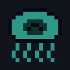
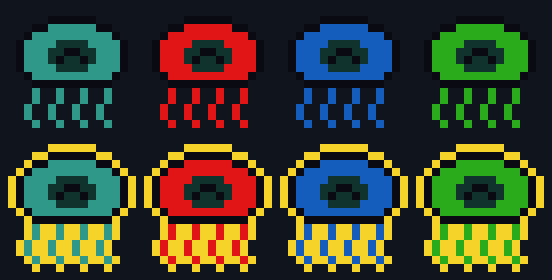
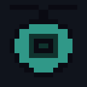
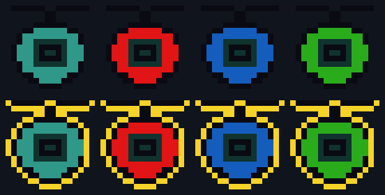
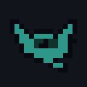
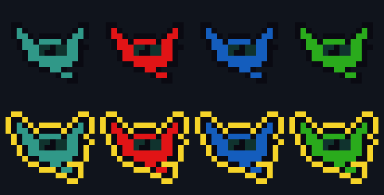
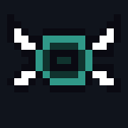
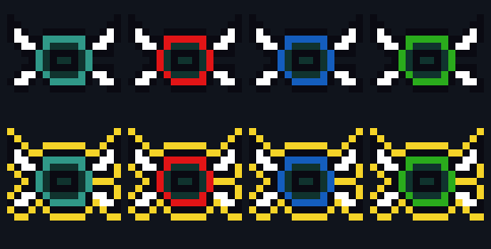

The air minion: it drifts left toward you while tracking your height, bobbing as it goes. Today it is plain shapes. Its box is 12 by 12 and its picture may be up to 16 by 16. Each picture is blown up eight times, so every square is one game pixel, and plays at game speed.
Every area has its own copy (the Fire Drifter, the Water Drifter), made by turning its body colour into that boss's colour. That only works for a three-colour drawing (outline, body, detail), like the Spiglet's, so all four are drawn that way. Under each: the original, then the Fire, Water and Grass copies, and below them the elite's gold rim.
Picked by the owner on 10 Nov 2026, in their words: "D, but with white wings for all slices, always facing the screen. other sprites will need 16-bit shading, but not Drifter [now called Pixie]". So D's wings are white in every area, its body and eye still take the area's colour, and it stays in this simple style. It always faces the screen, which D already does. Not in the game yet.








To pick: comment on this board, tag Claude, and give a letter. Mixing is fine ("A's body with D's wings").